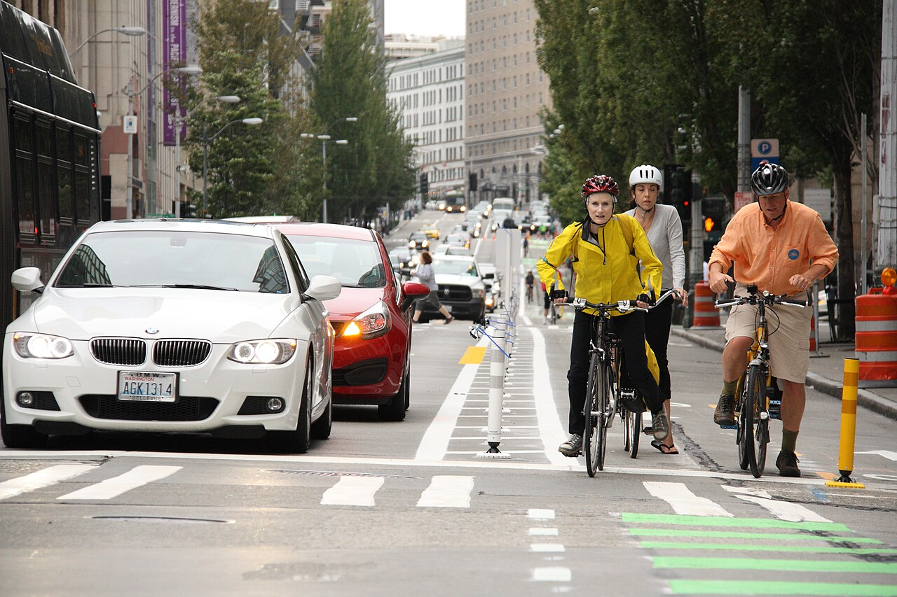

Transportation AI and Infrastructure Intelligence
Representation, learning and decision-making for transportation systems, from physical infrastructure to engineering and institutional practice.
Dr. Angela Kitali’s research group
We study how transportation systems can be understood, designed and governed to serve people and communities. Our research examines how infrastructure, human behavior and technological change jointly shape safety, reliability and access.
Artificial intelligence is a central part of this agenda, both as a means of inquiry and as a technology changing transportation practice. We investigate how learning and inference can deepen understanding of mobility, inform decisions across transportation networks, and support engineering judgment as services, technologies and travel needs evolve.
Led by Dr. Angela Kitali, Assistant Professor of Civil Engineering.

Representation, learning and decision-making for transportation systems, from physical infrastructure to engineering and institutional practice.
Understanding how risk emerges across road users, infrastructure and operating conditions, and how interventions can improve transportation safety.
Understanding how people and institutions respond to transportation technologies, information and services, and how those responses shape mobility.
Studying how network structure, service design and operational coordination determine reliability, connectivity and access across modes and communities.
Real-time crash-risk analysis and evaluation of incident-response strategies in Florida.
Neighborhood-level analysis of e-bike and e-scooter use in a mid-sized city.
Operational and safety studies of the bus rapid transit system in Dar es Salaam, Tanzania.
@article{101061jtepbsteeng8044,
title = {Applying Natural Language Processing to Identify Critical Textual Phrases for Classification of Wrong-Way Driving Crashes},
author = {Emmanuel Kidando and Boniphace Kutela and Meshack Mihayo and Angela Kitali},
journal = {Journal of Transportation Engineering, Part A: Systems},
year = {2026},
volume = {152},
pages = {04026064},
doi = {10.1061/jtepbs.teeng-8044}
}@article{101016jtrf202408008,
title = {What drives the change in safety perception and willingness to re-ride shared automated passenger Shuttles?},
author = {Boniphace Kutela and Norris Novat and Panick Kalambay and Oscar Oviedo-Trespalacios and Angela E. Kitali},
journal = {Transportation Research Part F: Traffic Psychology and Behaviour},
year = {2024},
volume = {106},
pages = {1-13},
doi = {10.1016/j.trf.2024.08.008}
}@article{10117703611981261437031,
title = {Transportation Engineering 2.0: A Vision for the Future Transportation Engineering Workforce},
author = {Jeffrey P. Walters and Panick Kalambay and Philip F. Balyagati and Josiah Owusu-Danquah and Angela Kitali and Anil Yazici and Alireza Ershad and Pamela Vasudeva and Heather Dillon},
journal = {Transportation Research Record: Journal of the Transportation Research Board},
year = {2026},
volume = {},
pages = {03611981261437031},
doi = {10.1177/03611981261437031}
}